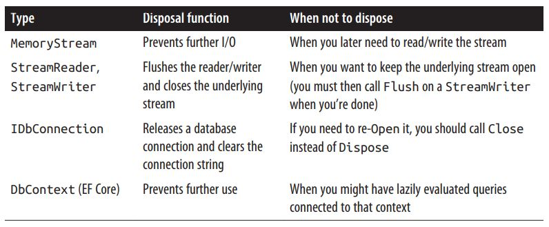
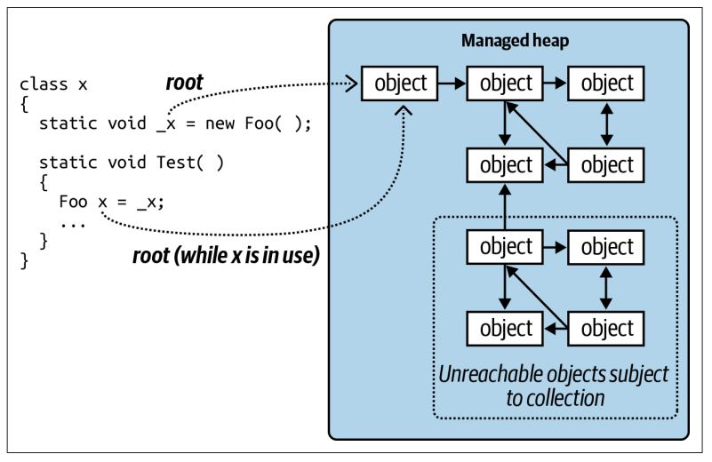
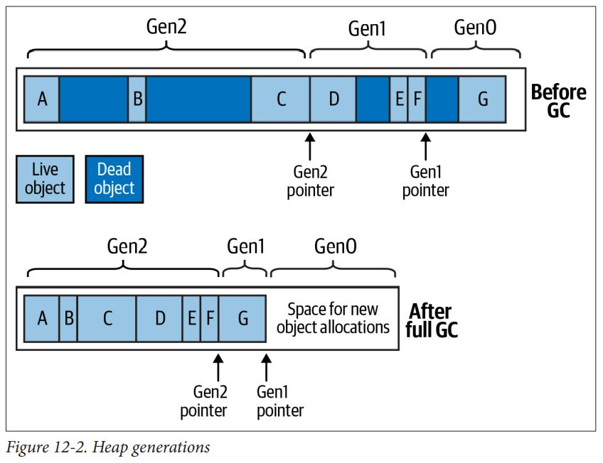

# 对象销毁与垃圾回收
有些对象需要依靠显式销毁代码来释放资源，例如打开的文件、锁、操作系统句柄和非托管对象。它们在.NET 的属于中称为销毁（disposal），相应的功能则由 IDisposable 接口提供。此外，那些占用了托管内存但不再使用的对象必须在某个时间回收。这个功能称为垃圾回收，它由 CLR 执行。
销毁不同于垃圾回收，它通常是显式调用，而垃圾回收则是完全自动执行的。
# IDisposable 接口、Disposable 方法和 Close 方法
.NET Core 为需要进行销毁操作的类型提供了一个特殊的接口：
public interface IDisposable | |
{ | |
void Dispose(); | |
} |
C# 的 using 语句从语法上提供了调用实现 IDisposable 接口对象的 Dispose 方法的捷径。它会将相应的语句包裹在 try/finally 语句块中。
using (FileStream fs = new FileStream ("myFile.txt", FileMode.Open)) | |
{ | |
// ... Write to the file ... | |
} |
编译器会将其转换为：
FileStream fs = new FileStream ("myFile.txt", FileMode.Open); | |
try | |
{ | |
// ... Write to the file ... | |
} | |
finally | |
{ | |
if (fs != null) ((IDisposable)fs).Dispose(); | |
} |
同样，下面的语法也能够确保在 fs 脱离作用域时将其销毁：
using FileStream fs = new FileStream ("myFile.txt", FileMode.Open); | |
// ... Write to the file ... |
在比较简单的情况下，编写自定义的可销毁类型只需要实现 IDisposable 接口并编写 Dispose 方法即可：
sealed class Demo : IDisposable | |
{ | |
public void Dispose() | |
{ | |
// Perform cleanup / tear-down. | |
... | |
} | |
} |
# 标准销毁语义
.NET Core 在其销毁逻辑中遵循一系列事实的规则。这些规则并未硬编码在.NET Core 或内置在 C# 语言中。它的目的是为消费者提供一个一致的协议。其中包括：
- 对象一旦销毁就无法再恢复，也不能够重新激活。在销毁后继续调用其方法（除 Dispose 外）或访问其属性都将抛出 ObjectDisposedException。
- 可以重复调用对象的 Dispose 方法，且不会发生任何错误。
- 若可销毁对象 x “拥有” 可销毁对象 y，则 x 的 Dispose 方法会自动调用 y 的 Dispose 方法，接到其他指令的情况除外。
尽管这些规则并不是强制的，但它对于编写自定义的类也是非常有帮助的。
Close 方法和 Stop 方法
除了 Dispose 方法，一些类型还定义了 Close 方法。框架并未对 Close 方法赋予一致的语义，但几乎所有情况都满足以下两者中的一个：
- 在功能上等价于 Dispose 方法
- 在功能上是 Dispose 方法的子集
第二种情形的一个示例是 IDbConnection 接口：关闭的连接可以重新打开；销毁的连接则不能。另一个例子是由 ShowDialog 激活的 Windows 窗体：Close 方法会隐藏它，但 Dispose 方法则释放它的资源。
一些类定义了 Stop 方法（例如 Timer 和 HttpListener）。Stop 方法可能会释放非托管资源，但和 Dispose 不同的是它允许调用 Start 方法重新开始。
在 Windows Runtime Library（WinRT）中，Close 方法和 Dispose 方法是等价的。事实上，运行时会将 Close 方法的调用映射到 Dispose 方法上，使相应的类型同样可以在 using 语句中使用。
# 销毁对象的时机
在几乎所有的情况下都需要遵循的安全规则是 “能销毁就销毁”。
然而，也有三种不适合销毁对象的情况：
- 当你并不持有该对象；例如，当通过静态字段或者属性获得共享对象时
- 当对象的 Dispose 方法执行了一些并不需要的操作时
- 当对象的 Dispose 方法在设计上并非必需，而且释放该对象会增加程序的复杂性时
第二种情况最常见。System.IO 和 System.Data 命名空间种就有一些很好的示例：

# 在销毁时清理字段
一般来说，我们并不需要在 Dispose 方法种清除对象的字段。然而，在销毁时取消在对象生命周期内对相关事件的订阅确实一个好的实践。取消这种订阅可以避免接收不需要的事件通知，同时能够避免垃圾回收器（GC）认为对象仍然处于存活状态。
Dispose 方法本身并没有释放（托管）内存，只有垃圾回收时才会释放内存。
# 自动垃圾回收
无论对象是否需通过 Dispose 方法来执行自定义清理逻辑，在某些时刻，堆上的内存都必须被释放。CLR 通过自动化的垃圾回收器来处理这些工作，而我们完全无法手动释放托管内存。
垃圾回收并非在对象不被引用后立即执行，而是周期进行的。这很像街道上的垃圾清洁工作，不同的是垃圾回收器的调度安排并不是确定的。CLR 会基于一些因素来决定何时开始回收。这些因素包括可用内存、已经分配的内存数目、最后一次内存回收的间隔（GC 会根据应用程序的内存访问模式自动进行优化）。这意味着在对象不被引用和内存释放之间有着不确定的延时。理论上说，这种间隔可能从几纳秒到几天。
垃圾回收器并不会在每一次回收中清理所有的垃圾。内存管理器会将内存划分为若干代。GC 会更频繁地回收最新的代（最近分配的对象），而旧的代（长时间存活的对象）则不会这样频繁地进行回收。
# 根
根可以使对象保持存活。如果对象没有直接或者间接地被根引用，那么它就可以被垃圾回收器回收了。
根由以下几种：
- 当前正在执行的方法（或在其调用栈的任何一个方法中）的局部变量或者参数
- 静态变量
- 终结队列中的对象
我们无法执行一个被删除对象中的代码，因此只要对象还有一个实例方法在执行，它就一定会被上述方式中的一种引用。
需要注意的是，相互循环引用的对象组在没有根引用的情况下可以回收。换言之，对象若无法按照箭头（引用）顺序从根对象进行访问，就是不可达的，这种对象将会被回收。

# 垃圾回收和 WinRT
WinRT 依赖引用计数机制而不是自动化的垃圾回收器，来释放内存。即便如此，从 C# 实例化的 WinRT 对象的生命周期也是靠 CLR 的垃圾回收器管理的。因为 CLR 会在背后创建一个名为运行时可调用包装器的对象，而它将通过这个中间对象访问 COM 对象。
# 终结器
若对象拥有终结器，则在对象从内存中释放前，会执行终结器。
终结器之所以可以执行是因为垃圾回收是分不同的阶段进行的。首先，垃圾回收器会确定未使用的可以删除的对象，而那些没有终结器的对象会被直接删除；有（挂起或未执行的）终结器的对象在当时会保持存活，并被放到一个特殊的队列中。
此时，垃圾回收就已经完成了，应用程序将继续执行。此时，终结器线程开始与应用程序并行执行，取出特殊队列中的对象并执行其终结方法。在每一个对象的终结器执行前，对象仍然是存活的，此时这个特殊队列扮演着根对象的角色。一旦对象离开了队列，并且终结器执行完毕，对象就变成了未引用的对象，并将在下一次（属于该对象那一代的）垃圾回收时删除。
终结器非常有用，但是它也有一些附加的代价：
- 终结器会降低内存分配和回收的速度（GC 需要对终结器的执行进行追踪）。
- 终结器延长了对象和该对象所引用的对象的生命周期（它们必须等到下一次垃圾回收时才会被真正删除）。
- 无法预测多个对象的终结器调用的顺序。
- 开发者对于终结器调用的实际只有非常有限的控制。
- 如果一个终结器的代码阻塞，则其他对象也无法终结。
- 如果应用程序没有完全被卸载，则对象的终结器也可能无法得以执行。
总之，终结器和律师有相似之处，虽然它的存在非常必要，但是除非绝对必要，通常都不会希望使用它。如果使用它的话，则需要 100% 理解它所做的一切。
要实现终结器，需要遵守以下的准则：
- 保证终结器可以很快执行完毕
- 永远不要阻塞终结器的执行
- 不要引用其他可终结对象
- 不要在终结器中抛出异常
CLR 甚至可以在对象构造器抛出异常时调用对象的终结器。因此需要注意，在编写终结器时，对象的字段有可能并没有初始化完毕。
# 在终结器中调用 Dispose
需要注意，在这种模式下，内存的回收和资源的回收两件事情耦合在了一起，而实际上它们的关注点是不同的（除非资源本身就是内存）。此外，这种模式会增加终结线程的负担。
该模式通常在消费者忘记调用 Dispose 方法时作为补救措施。但是，也可以相应地记录日志以便将来修复这个问题。
以下就是实现这种用途的标准模式：
class Test : IDisposable | |
{ | |
public void Dispose() // NOT virtual | |
{ | |
Dispose (true); | |
GC.SuppressFinalize (this); // Prevent finalizer from running. | |
} | |
protected virtual void Dispose (bool disposing) | |
{ | |
if (disposing) | |
{ | |
// Call Dispose() on other objects owned by this instance. | |
// You can reference other finalizable objects here. | |
// ... | |
} | |
// Release unmanaged resources owned by (just) this object. | |
// ... | |
} | |
~Test() => Dispose (false); | |
} |
需要注意的一个地方时我们在无参数的 Dispose 方法中调用了 GC.SuppressFinalize 方法。这可以防止垃圾回收器在之后回收这个对象时执行终结器。
# 对象的复活
如果终结器将即将销毁的对象引用到了一个存活的对象上，那么当下一次（属于哪个对象代的）垃圾回收发生时，CLR 会发现先前需要销毁的对象不再需要销毁了，因此该对象就不会被回收。这是一个高级处理方式，称为 “复活”（resurrection）。
GC.ReRegisterForFinalize 方法
复活对象的终结器将不会重新执行。如果希望其重新执行，必须调用 GC.ReRegisterForFinalize 方法。
# 垃圾回收器的工作方式
标准 CLR 使用分代式标记 - 压缩 GC 对托管堆上的对象进行自动内存管理。这种垃圾回收器式追踪型垃圾回收器，它不会干涉每一次的对象访问，而是会直接激活并追踪存储在托管堆上的对象引用图来决定哪些对象应当作为垃圾进行回收。
当内存分配量超过了特定的阈值，或者需要降低应用程序内存使用量时，垃圾回收器就会在进行内存分配时（通过 new 关键字）触发一次垃圾回收。这个过程还可以通过调用 System.GC.Collect 方法手动触发。在垃圾会后过程中，所有的线程都可能冻结。
GC 会从根对象开始按照对象引用遍历对象图，将所有遍历到的对象标记为可达对象。当这个过程完成后，所有没有标记的对象（即未被使用的对象）将会被作为垃圾进行回收。
未被使用的对象若没有终结器，则会被立即回收。而有终结器的对象将会被放到终结队列中，并在 GC 完成后有终结器线程处理。这些对象将在下一次对这代对象的垃圾回收中回收（除非该对象复活）。
剩余的存活对象将移动到堆的起始位置（压缩），释放出更多的对象空间来容纳更多的对象。这种压缩的目的有两个：它可以防止内存碎片化，并且 GC 可以用很简单的策略来分配新的对象，将新的对象分配在堆的尾部即可；同时，它还避免了耗时的内存碎片列表的维护开销。
如果垃圾回收后仍然没有足够的内存来分配新的对象，且操作系统也无法分配更多的内存，则会抛出 OutOfMemoryException。
# 优化技术
垃圾回收器使用了多种优化技术来减少垃圾回收的时间。
分代回收
最重要的优化措施是分代垃圾回收。这是因为尽管许多对象的分配和释放非常频繁，但是某些对象会长时间存活，并不需要在每次回收时都追踪它。
垃圾回收器将堆上的内存分为了三代。刚刚分配的对象位于第 0 代；在第一轮回收中存活的对象在第 1 代，其他所有对象对象在第 2 代。第 0 代和第 1 代对象就是所谓的短生存期的代。
CLR 将第 0 代控制在一个相对较小的空间内（其典型大小在几百 KB 至几 MB）。当第 0 代填满时，GC 就会触发第 0 代垃圾回收。第 0 代垃圾回收会频繁发生。GC 对第 1 代内存应用了相似空间限制（作为第 2 代的缓冲区），且第 1 代内存的回收也相对快速而频繁。一次完整的内存回收会包含第 2 代内存，但是这种回收时间较长，因此并不是那么频繁。

与第 0 代和第 1 代内存不同，第二代内存是没有大小限制的。
大对象堆
垃圾回收器会将大于某一阈值的对象（目前是 85000 字节）存放在一个独立的堆中，称为大对象堆（Large Object Heap，LOH）。它可以避免大型对象的开销，并避免过量的第 0 代回收。如果没有 LOH，分配一系列的 16MB 对象时几乎每次分配就会触发一次第 0 代的回收。
默认情况下，大对象堆时不会被压缩的，因为在垃圾回收时移动大块内存的开销较大。这意味着：
- 分配将变得更加缓慢，需要维护空闲内存块的链表
- 大对象堆可能会碎片化
如果碎片化会造成问题，也可以控制 GC 在下一次回收时压缩大对象堆：
GCSettings.LargeObjectHeapCompactionMode = | |
GCLargeObjectHeapCompactionMode.CompactOnce; |
如果应用程序频繁分配大型数组，则另一个应对方案是使用.NET Core 的数组池 API。
大对象堆并不是分代的，其上所有的对象都会按第 2 代来处理。
工作站回收与服务器回收
.NET Core 提供了两种垃圾回收模式：工作站模式和服务器模式。工作站模式是默认模式。
当启用服务器回收模式时，CLR 会未每一个内核分配独立的堆并安排独立的 GC。虽然这样可以加速回收，但这会消耗更多的内存和 CPU 资源（因为每一个内核都需要相应的线程）。若计算机启用服务器 GC 并同时执行多个其他线程时就可能导致 CPU 过载。这在工作站下现象尤其明显，因为这将使操作系统的响应能力下降。
后台回收
不论是工作站还是服务器模式，CLR 都会默认启用后台回收。
在回收过程中，GC 必须冻结（阻塞）执行线程。而后台回收则可以缩小这种延迟，使得应用程序具有更好的响应性。当然，这也会相对地多消耗一些 CPU 和内存资源。
后台回收令应用程序代码和第 2 代会后得以并行执行（第 0 代和第 1 代的回收速度足够快，因此对其并行并行会后并没有太多的优势）。
后台回收是之前并发回收的改进版本。在先前的版本中，如果第 0 代内存已经占满且第 2 代正在进行内存回收则无法维持并发；而后台回收则没有这种限制。因此，使用后台回收，应用程序就可以持续地分配内存，并获得更好的响应性。
垃圾回收通知
# 强制垃圾回收
我们可以在任意时刻嗲用 GC.Collect 方法来强制进行垃圾回收。
# 垃圾回收过程的调整
GCSettings.LatencyMode 静态属性可以决定如何在延迟和整体效率上进行权衡。
# 内存压力
# 数组池
若应用程序频繁初始化数组对象，则可以使用数组池（array pooling）避免大部分垃圾回收的开销。
# 托管内存泄漏
托管内存泄露是由哪些虽然不再使用，但其引用已经被遗忘而一致存活的对象造成的。常见的一种情况是事件处理器造成的，它保存着堆目标对象的引用（除非目标是一个静态方法）。例如，考虑以下的类：
class Host | |
{ | |
public event EventHandler Click; | |
} | |
class Client | |
{ | |
Host _host; | |
public Client (Host host) | |
{ | |
_host = host; | |
_host.Click += HostClicked; | |
} | |
void HostClicked (object sender, EventArgs e) { ... } | |
} | |
The following test class contains a method that instantiates 1,000 clients: | |
class Test | |
{ | |
static Host _host = new Host(); | |
public static void CreateClients() | |
{ | |
Client[] clients = Enumerable.Range (0, 1000) | |
.Select (i => new Client (_host)) | |
.ToArray(); | |
// Do something with clients ... | |
} | |
} |
以上问题的解决方案之一是令 Client 实现 IDisposable 接口，并在 Disposse 方法中注销事件处理器：
public void Dispose() { _host.Click -= HostClicked; } |
而 Client 的消费者应当在使用完毕后销毁这些实例：
Array.ForEach (clients, c => c.Dispose()); |
# 定时器
忽略定时器也会造成内存泄漏。根据定时器的类型可分为两种不同的情况。首先我们来关注一下 System.Timers 命名空间中的定时器。
using System.Timers; | |
class Foo | |
{ | |
Timer _timer; | |
Foo() | |
{ | |
_timer = new System.Timers.Timer { Interval = 1000 }; | |
_timer.Elapsed += tmr_Elapsed; | |
_timer.Start(); | |
} | |
void tmr_Elapsed (object sender, ElapsedEventArgs e) { ... } | |
} |
在这种情况下，Foo 实例将永远不会被回收！问题在于.NET Core 自身会保留已经激活的定时器的引用，以便触发 Elapsed 事件。因此：
- .NET Core 会确保_timer 的存活
- _timer 通过 tmr_Elapsed 事件处理器使 Foo 实例保持存活
当你意识到 Timer 实现了 IDisposable 接口时，其解决方法就很明显了。销毁定时器将使其停止并保存.NET Core 不会再引用定时器对象：
class Foo : IDisposable | |
{ | |
... | |
public void Dispose() { _timer.Dispose(); } | |
} |
如果类中的任何字段所赋的对象实现了 IDisposable 接口，那么该类也应当实现 IDisposable 接口。这是一个实现 IDisposable 的良好准则。
然而，System.Threading 命名空间下的定时器是比较特殊的。.NET Core 并不会保存激活定时器的引用，而是直接引用回调委托。这意味着如果忘记销毁线程定时器，那么终结器也会触发，定时器将自动停止并销毁：
static void Main() | |
{ | |
var tmr = new System.Threading.Timer (TimerTick, null, 1000, 1000); | |
GC.Collect(); | |
System.Threading.Thread.Sleep (10000); // Wait 10 seconds | |
} | |
static void TimerTick (object notUsed) { Console.WriteLine ("tick"); } |
上述代码必须在 “release” 模式下编译（禁用 debug 模式并开启代码优化）。
# 诊断内存泄漏
最简单避免托管内存泄漏的方式就是再编写应用程序时主动监视内存的使用状况。